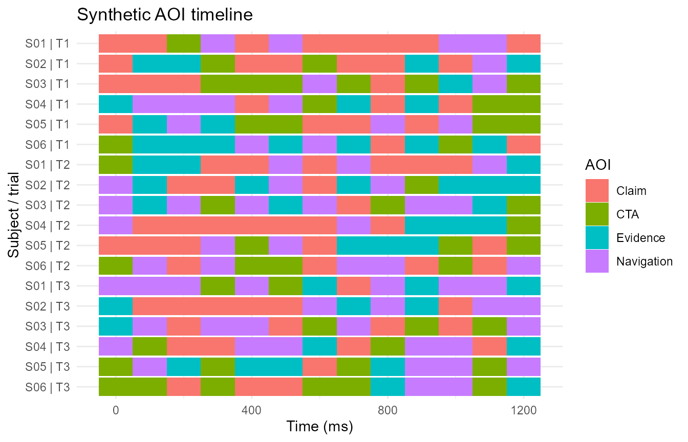
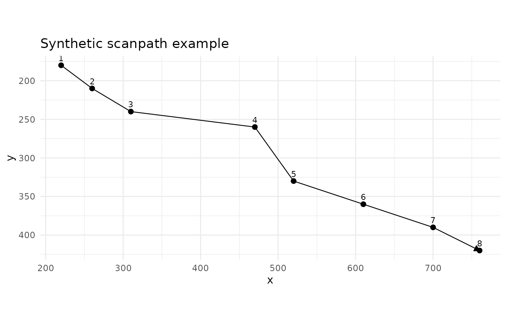
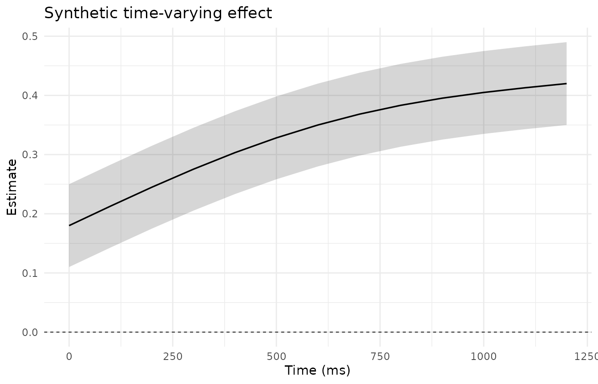
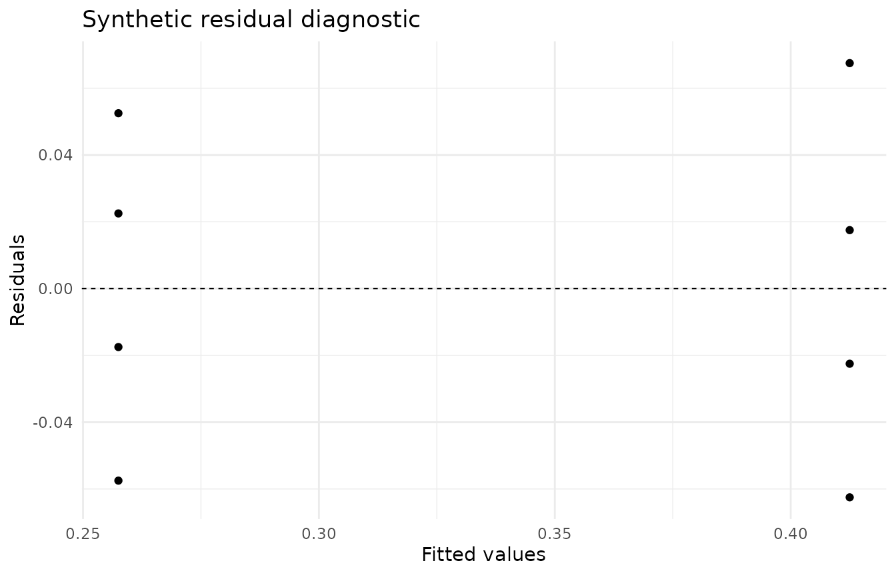

Statistical extensions and plots
Source:vignettes/articles/statistical-extensions-plots.Rmd
statistical-extensions-plots.RmdThis article demonstrates the post-1.0.2 statistical-extension layer
in gp3tools. The examples use small synthetic data created
inside the article. They are software demonstrations only, not empirical
findings.
Example data
set.seed(2026)
aoi_demo <- expand.grid(
subject_id = paste0('S', sprintf('%02d', 1:6)),
trial_id = paste0('T', 1:3),
time_ms = seq(0, 1200, by = 100),
KEEP.OUT.ATTRS = FALSE,
stringsAsFactors = FALSE
)
aoi_demo$condition <- ifelse(aoi_demo$subject_id %in% paste0('S', sprintf('%02d', 1:3)), 'control', 'treatment')
aoi_demo$aoi <- sample(c('Claim', 'Evidence', 'CTA', 'Navigation'), nrow(aoi_demo), replace = TRUE)
fix_demo <- data.frame(
subject_id = 'S01',
trial_id = 'T1',
fixation_index = 1:8,
start_time_ms = seq(0, 1050, by = 150),
end_time_ms = seq(120, 1170, by = 150),
x = c(220, 260, 310, 470, 520, 610, 700, 760),
y = c(180, 210, 240, 260, 330, 360, 390, 420),
aoi = c('Claim', 'Claim', 'Evidence', 'Evidence', 'CTA', 'CTA', 'Navigation', 'Navigation'),
stringsAsFactors = FALSE
)
effect_demo <- data.frame(
time_ms = seq(0, 1200, by = 100),
estimate = seq(0.18, 0.42, length.out = 13) + sin(seq(0, pi, length.out = 13)) * 0.05
)
effect_demo$lower <- pmax(0, effect_demo$estimate - 0.07)
effect_demo$upper <- pmin(1, effect_demo$estimate + 0.07)
model_demo <- data.frame(
target_prop = c(0.20, 0.24, 0.28, 0.31, 0.35, 0.39, 0.43, 0.48),
condition = rep(c('control', 'treatment'), each = 4)
)
model_fit <- stats::lm(target_prop ~ condition, data = model_demo)AOI timeline
plot_gazepoint_aoi_timeline() provides a compact
scarf-style view of AOI state over time.
plot_gazepoint_aoi_timeline(
aoi_demo,
aoi_col = 'aoi',
time_col = 'time_ms',
subject_col = 'subject_id',
trial_col = 'trial_id',
title = 'Synthetic AOI timeline',
x_label = 'Time (ms)'
)
Scanpath plot
plot_gazepoint_scanpath() connects fixation coordinates
in temporal order.
plot_gazepoint_scanpath(
fix_demo,
x_col = 'x',
y_col = 'y',
group_cols = c('subject_id', 'trial_id'),
time_col = 'start_time_ms',
fixation_index_col = 'fixation_index',
reverse_y = TRUE,
title = 'Synthetic scanpath example'
)
Time-varying effect plot
plot_gazepoint_time_varying_effect() visualises a
time-varying estimate and interval.
plot_gazepoint_time_varying_effect(
effect_demo,
time_col = 'time_ms',
estimate_col = 'estimate',
lower_col = 'lower',
upper_col = 'upper',
title = 'Synthetic time-varying effect',
x_label = 'Time (ms)',
y_label = 'Estimate'
)
Model residual diagnostics
plot_gazepoint_model_residuals() gives a compact
residual diagnostic for fitted models.
plot_gazepoint_model_residuals(
model = model_fit,
title = 'Synthetic residual diagnostic'
)
Sequence and scanpath summaries
The extension layer also includes lightweight tabular sequence summaries.
compute_gazepoint_aoi_entropy(
aoi_demo,
aoi_col = 'aoi',
group_cols = c('subject_id', 'trial_id'),
time_col = 'time_ms',
collapse_repeats = TRUE
) |> head()
#> subject_id trial_id n_observations n_aoi spatial_entropy spatial_entropy_norm
#> 1 S01 T1 8 3 1.405639 0.8868595
#> 2 S02 T1 10 4 1.846439 0.9232197
#> 3 S03 T1 9 4 1.836592 0.9182958
#> 4 S04 T1 10 4 1.970951 0.9854753
#> 5 S05 T1 10 4 1.970951 0.9854753
#> 6 S06 T1 11 4 1.858555 0.9292776
#> n_transitions n_transition_types transition_entropy transition_entropy_norm
#> 1 7 4 1.842371 0.9211855
#> 2 9 7 2.725481 0.9708358
#> 3 8 6 2.500000 0.9671320
#> 4 9 8 2.947703 0.9825676
#> 5 9 8 2.947703 0.9825676
#> 6 10 6 2.521928 0.9756150
#> conditional_transition_entropy conditional_transition_entropy_norm
#> 1 0.3935554 0.2483058
#> 2 0.8888889 0.4444444
#> 3 0.5943609 0.2971805
#> 4 1.0566417 0.5283208
#> 5 1.0566417 0.5283208
#> 6 0.7609640 0.3804820
#> entropy_status
#> 1 ok
#> 2 ok
#> 3 ok
#> 4 ok
#> 5 ok
#> 6 ok
compute_gazepoint_aoi_sequence_metrics(
aoi_demo,
aoi_col = 'aoi',
group_cols = c('subject_id', 'trial_id'),
time_col = 'time_ms'
) |> head()
#> subject_id trial_id sequence_length n_aoi_visits n_unique_aoi
#> 1 S01 T1 13 8 3
#> 2 S02 T1 13 10 4
#> 3 S03 T1 13 9 4
#> 4 S04 T1 13 10 4
#> 5 S05 T1 13 10 4
#> 6 S06 T1 13 11 4
#> transition_count revisit_count revisit_prop dominant_aoi first_aoi last_aoi
#> 1 7 5 0.6250000 Claim Claim Claim
#> 2 9 6 0.6000000 Claim Claim Evidence
#> 3 8 5 0.5555556 CTA Claim CTA
#> 4 9 6 0.6000000 Navigation Evidence CTA
#> 5 9 6 0.6000000 Claim Claim CTA
#> 6 10 7 0.6363636 Evidence CTA Claim
#> mean_run_length max_run_length sequence_status
#> 1 1.625000 4 ok
#> 2 1.300000 2 ok
#> 3 1.444444 3 ok
#> 4 1.300000 3 ok
#> 5 1.300000 2 ok
#> 6 1.181818 3 ok
compute_gazepoint_sequence_distance(
c('Claim', 'Evidence', 'CTA'),
c('Claim', 'CTA', 'Evidence')
)
#> edit_distance normalized_distance sequence_a_length sequence_b_length
#> 1 2 0.6666667 3 3
#> distance_status
#> 1 ok
compute_gazepoint_scanpath_similarity(
aoi_demo[aoi_demo$subject_id %in% c('S01', 'S02') & aoi_demo$trial_id == 'T1', ],
aoi_col = 'aoi',
group_cols = 'subject_id',
time_col = 'time_ms',
collapse_repeats = TRUE
)
#> sequence_a sequence_b edit_distance normalized_distance similarity
#> 1 subject_id=S01 subject_id=S01 0 0.0 1.0
#> 2 subject_id=S02 subject_id=S02 0 0.0 1.0
#> 3 subject_id=S01 subject_id=S02 5 0.5 0.5
#> sequence_a_length sequence_b_length n_sequences similarity_status
#> 1 8 8 2 ok
#> 2 10 10 2 ok
#> 3 8 10 2 ok